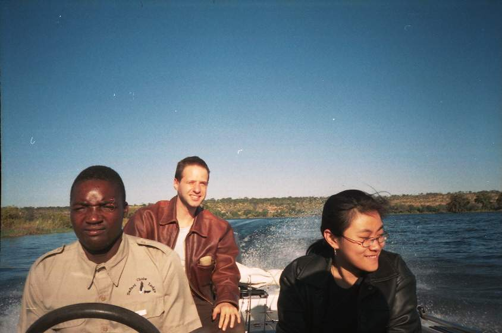
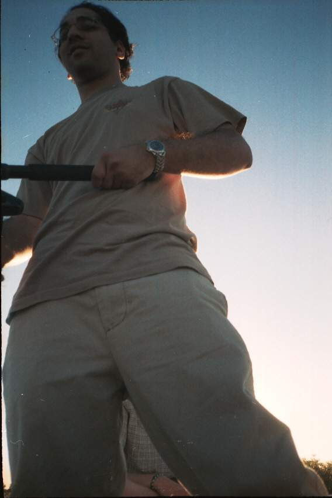

|
|
|
|
The land seems ever so rich here. As Mani was correctly saying. Everything is rich. The colours, the life and the weather. The days fly so fast, not because of time going by fast. It's more like there are many cycles we go through during the day really fast. Also temperature changes a lot.
Yesterday we were supposed to do the renting the car safari, the individual one. But it didn't happen neither today. So yesterday we chilled then me Mani, Aneesh and Windy did the fishing boat trip of 2 hours. It was very nice. We were pretty baked then we brought some drinks on the boat and we tried to fish.
I must say that Aneesh tried very hard to get some fish. He was doing everything of what Boston (the boat ghuide) was telling him to do. But he still didn't fish anything. Him and Boston just kept trying. Then we even went to Moana, and Aneesh drove the boat back. He had a blast and did a good job in parking it too.
When we came back, we ran into the rest of the group which had done the afternoon safari, and were therefore very happy, since it was very exciting: their guide was great, they said it was Stan, and they got to see a kill of a lion and they saw a lot more exciting stuff. We are going to do the half day safari, from 12pm to 6pm tomorrow.
| Previous | Home | Next |